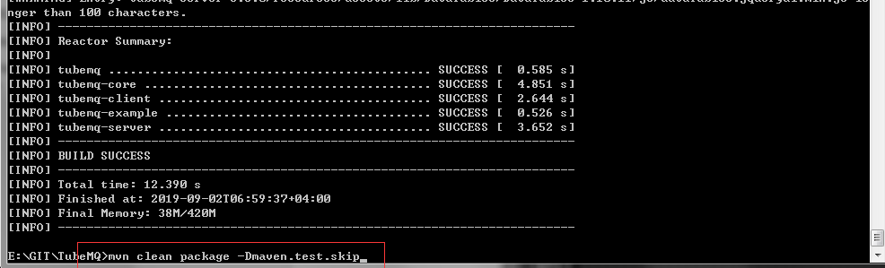
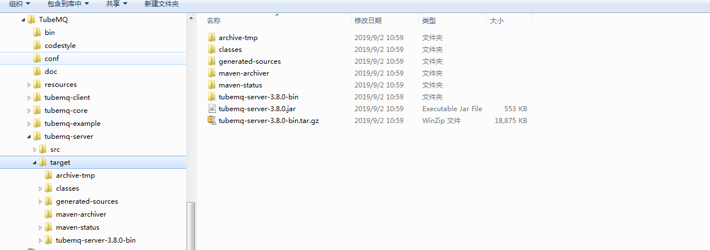
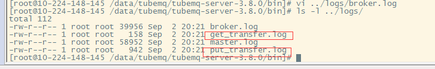

Documentation
Documentation
- User manual
TubeMQ编译、部署及简单使用：
工程编译打包：
进入工程根目录,执行命令：
mvn clean package -Dmaven.test.skip
例如将TubeMQ源码包放在E盘根目录，按照如下方式执行上述命令，当各个子目录都编译成功时工程编译完成：

大家也可以进入各个子目录进行单独编译，编译过程与普通的工程编译处理过程一致。
部署服务端：
如上例子，进入E:\GIT\TubeMQ\tubemq-server\target目录，服务侧的相关内容如下，其中tubemq-server-3.8.0-bin.tar.gz为完整的服务端安装包，里面包括执行脚本，配置文件，依赖包，以及前端的源码；tubemq-server-3.8.0.jar为服务端处理逻辑包，包含于完整工程安装包的lib里，单独提出是考虑到日常变更升级时改动点多在服务器处理逻辑上，升级的时候只需要单独替换该jar包即可：

这里我们是全新安装，将上述完整的工程安装包部署到待安装机器上，我们这里是放置在/data/tubemq目录下：

配置系统：
服务包里打包了3种角色：Master、Broker、Tools，业务使用时可以将Master和Broker放置在一起，也可以单独分开不同机器放置，依照业务对机器的规划进行处理。我们通过如下4台机器搭建一个完整的有2台Master的生产、消费环境：
| 机器 | 所属角色 | 端口设置 | 备注 |
|---|---|---|---|
| TCP端口 | TLS端口 | WEB端口 | |
| 10.224.148.145 | Master | 8099 | 8199 |
| Broker | 8123 | 8124 | 8081 |
| ZK | 2181 | ||
| Offset存储于根目录/tubemq | |||
| 100.115.158.208 | Master | 8099 | 8199 |
| Broker | 8123 | 8124 | 8081 |
| 10.224.155.80 | Producer | ||
| Consumer | |||
部署Master时需要注意：
- 部署Master的机器，Master集群可以部署1台、2台或者3台：如果要保证高可靠建议3台（任意坏1台Master对外仍然可读写配置及接入新的生产或者消费），如果只需要保证一般情况2台（任意坏1台Master对外仍然可读配置及已接入的生产和消费不受影响），最低1台（坏1台Master对外配置不可读写及已接入的生产和消费不受影响）；
- 在完成Master的规划后，对于配置Master的机器，需要将Master所在机器加入时间同步，同时Master各个机器的IP要在各个Master机器的/etc/hosts配置里进行设置，如：

以10.224.148.145和100.115.158.208为例，我们部署了Master和Broker两种角色，需要在/conf/master.ini，/resources/velocity.properties，/conf/broker.ini里进行如下配置，首先是10.224.148.145的配置：

然后是配置100.115.158.208：

要注意的是右上角的配置为Master的Web前台配置信息，需要根据Master的安装路径修改/resources/velocity.properties里的file.resource.loader.path信息。
启动Master：
完成如上配置设置后，首先进入主备Master所在的TubeMQ环境的bin目录，进行服务启动操作：

我们首先启动10.224.148.145，然后启动100.115.158.208上的Master，如下打印可以表示主备Master都已启动成功并开启了对外服务端口：

访问Master的管控台(http://100.115.158.208:8080/config/topic_list.htm)，页面可查则表示master已成功启动：

启动Broker：
启动Broker和启动master有些差别：Master负责管理整个TubeMQ集群，包括Broker节点运行管理以及节点上部署的Topic配置管理，还有生产和消费管理等，因此，实体的Broker启动前，首先要在Master上配置Broker元数据，增加Broker相关的管理信息，如下图示：

点击确认后形成一个草稿的Broker记录：

我们对该broker节点进行启动操作：

结果发现报错信息：

因为该broker目前还处在草稿状态Broker信息没有正式生效，我们回到Master管控台进行上线生效操作：

Master上所有的变更操作在点击确认的时候，都会弹出如上输入框，要求输入操作授权码。该信息由运维通过Master的配置文件master.ini的confModAuthToken字段进行定义：如果你知道这个集群的密码，你就可以进行该项操作，比如你是管理员，你是授权人员，或者你能登陆这个master的机器拿到这个密码，都认为你是有权操作该项功能：

然后我们再重启Broker：


查看Master管控台，broker已经注册成功：

配置及生效Topic：
配置Topic和配置Broker信息类似，都需要先在Master上新增元数据信息，然后才能开始使用，要不生产和消费时候会报topic不存在错误，如我们用安装包里的example对不存在的Topic名test进行生产：
/usr/local/java/default/bin/java -Xmx512m -Dlog4j.configuration=file:/data/tubemq/tubemq-server-3.8.0/conf/tools.log4j.properties -Djava.net.preferIPv4Stack=true -cp /data/tubemq/tubemq-server-3.8.0/lib/\*:/data/tubemq/tubemq-server-3.8.0/conf/\*: com.tencent.tubemq.example.MessageProducerExample 100.115.158.208 10.224.148.145:8000,100.115.158.208:8000 test 10000000
Demo实例会报如下错误信息：

我们在Master管控台的Topic列表上加入该Topic先：


点击确认后会有一个选择部署该新增Topic的Broker列表，选择部署范围后进行确认操作；在完成新增Topic的操作后，我们还需要对刚进行变更的配置对Broker进行重载操作，如下图示：

重载完成后Topic才能对外使用，我们会发现如下配置变更部分在重启完成后已改变状态：

大家需要注意的是： 我们在重载的时候，要对待重载的Broker集合分批次进行。我们的重载通过状态机进行控制，会先进行不可读写—〉只读操作—〉可读写—〉上线运行各个子状态处理，如果所有待重启Broker全量重载，会使得已在线对外服务的Topic对外出现短暂的不可读写状况，使得生产、消费，特别是生产发送失败。
数据生产和消费：
在安装包里，我们打包了example的测试Demo，业务也可以直接使用tubemq-client-3.8.0.jar封装自己的生产和消费逻辑，总的形式是类似，我们先执行生产者的Demo，我们可以看到Broker上已开始有数据接收：
/usr/local/java/default/bin/java -Xmx512m -Dlog4j.configuration=file:/data/tubemq/tubemq-server-3.8.0/conf/tools.log4j.properties -Djava.net.preferIPv4Stack=true -cp /data/tubemq/tubemq-server-3.8.0/lib/\*:/data/tubemq/tubemq-server-3.8.0/conf/\*: com.tencent.tubemq.example.MessageProducerExample 100.115.158.208 10.224.148.145:8000,100.115.158.208:8000 test 10000000

我们再执行消费Demo，我们也可以看到消费也正常：
/usr/local/java/default/bin/java -Xmx512m -Dlog4j.configuration=file:/data/tubemq/tubemq-server-3.8.0/conf/tools.log4j.properties -Djava.net.preferIPv4Stack=true -cp /data/tubemq/tubemq-server-3.8.0/lib/\*:/data/tubemq/tubemq-server-3.8.0/conf/\*: com.tencent.tubemq.example.MessageConsumerExample 10.224.148.145 10.224.148.145:8000,100.115.158.208:8000 test testGroup 3 1 1

在Broker的生产和消费指标日志里，相关数据已经存在：

在这里，已经完成了TubeMQ的编译，部署，系统配置，启动，生产和消费。如果需要了解更深入的内容，就需要查看《TubeMQ HTTP API》里的相关内容，进行相应的配置设置。